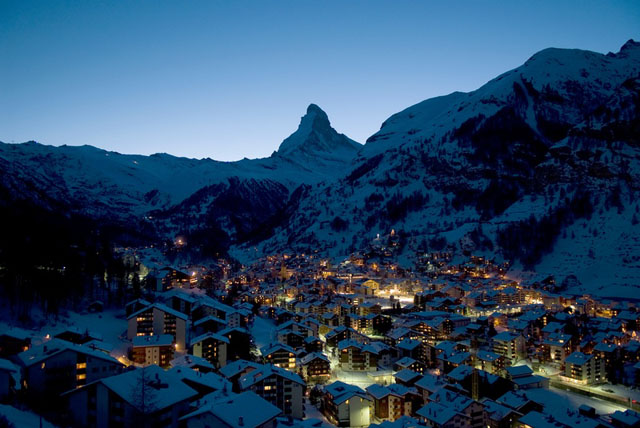
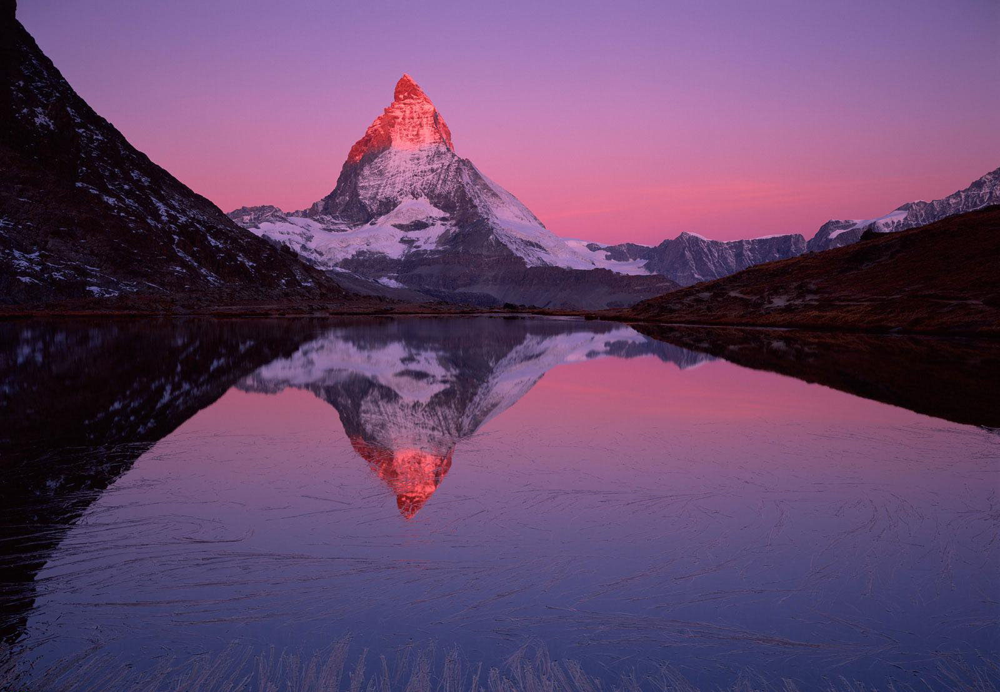
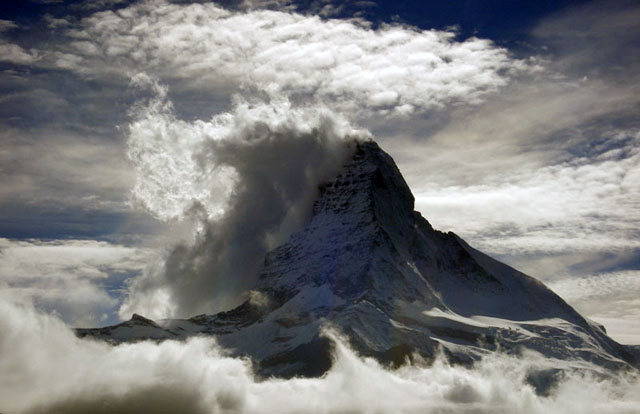
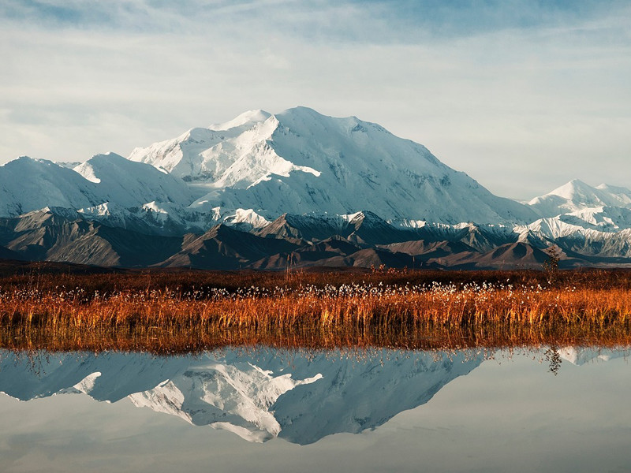
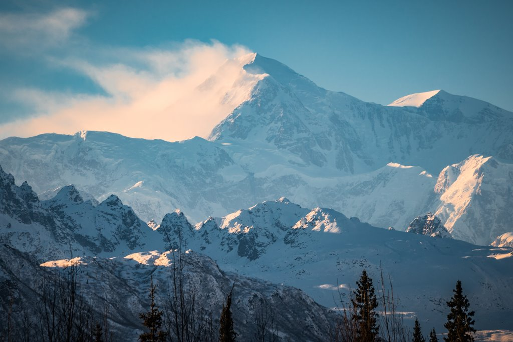
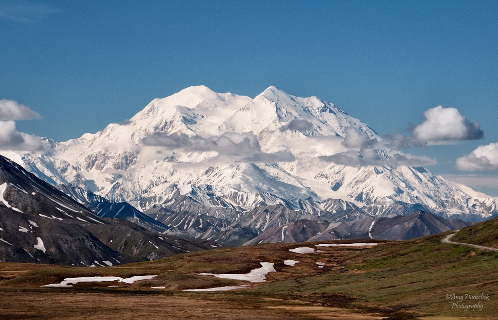
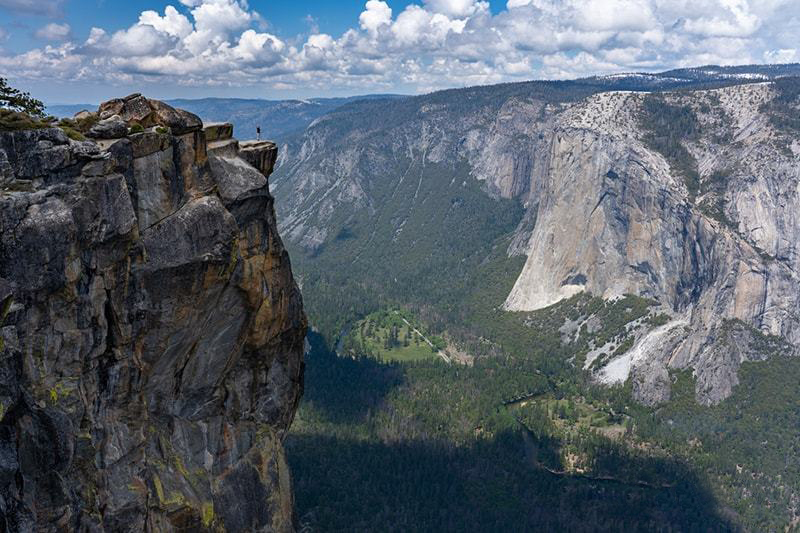
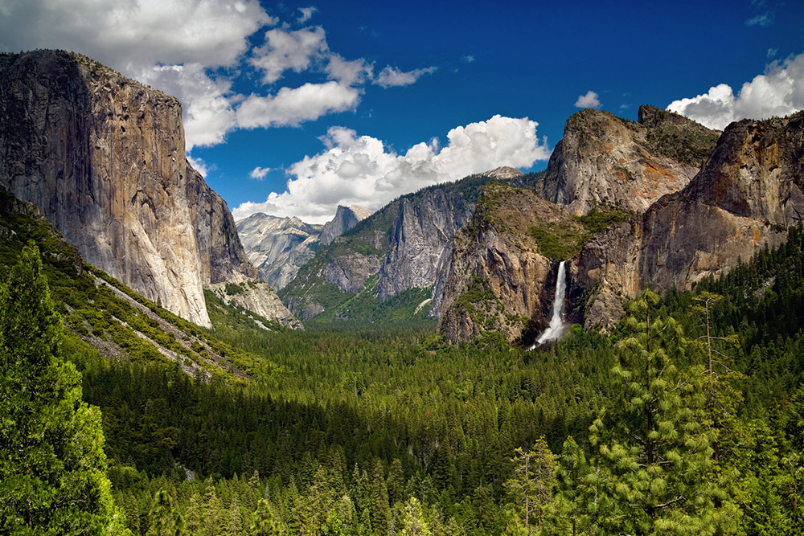
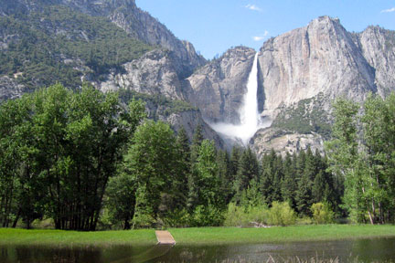

  
| Zermatt
El Cervino (Matterhorn; Mont Cervin; Le Cervin; Hore; Horu)
Alpes, Suiza
Monte Cervino o Matterhorn como se conoce en alemán, es la montaña más fotografiada de Europa gracias a su espectacular forma piramidal. Se encuentra en los Alpes, en la frontera entre Suiza e Italia y cerca de las localidades de Zermatt y Breuil-Cervinia. Sus cuatro caras perfectamente definidas se elevan sobre los glaciares que las rodean hasta los 4.478 metros de altura. Se trata sin duda de una maravilla de la naturaleza. No se puede negar que el Matterhorn es lo suficientemente llamativo como para destacarse. Es inmediatamente reconocible, pues es icónica de los Alpes suizos, y también sirve como una subida muy emocionante y peligrosa para aquellos que desean ascender. Debido a su situación aislada, el Matterhorn está expuesto a rápidos cambios de clima, que junto con sus escarpadas caras hacen que no sea difícil verlo entre nubes de tipo orográficas. Esto puede dificultar a los escaladores. Sin embargo, el clima dramático sin duda acentúa la belleza de la montaña, que se suma a su encanto.
Zermatt se encuentra a los pies del Matterhorn y es el punto de partida de muchos visitantes. Una gran estación de esquí y la práctica del senderismo o trekking alrededor de la montaña, son sus grandes atractivos. Solo se puede llegar allí en tren, ya que el uso de automóviles está prohibido, salvo que sean eléctricos. La primera ascensión al Monte Cervino se llevó a cabo en 1865, bajo una expedición liderada por Edward Whymper. Fue uno de los últimos picos de los Alpes en ser conquistado y ese primer ascenso marcó el final de la época dorada del alpinismo, que comenzó en 1854 con el ascenso al Wetterhorn por Alfred Wills. Una de las razones por las que el Matterhorn resulta una montaña tan fotogénica, es el bonito paisaje que lo rodea, pudiendo encontrar laderas, bosques y varios lagos donde fotografiarlo reflejado. El Monte Cervino ha sido uno de los candidatos a convertirse en una de las nuevas siete maravillas naturales del mundo. |
  
| Parque Denali
Monte Denali "The High One" (El Grande)
Alaska, Estados Unidos
En 1896, un buscador de oro llamado William Dickey impuso -de forma no oficial- el nombre de McKinley a la montaña. Hasta ese momento era nombrado como Deenaalee por los nativos Koyukon, que en su lengua significa “El Grande”. Recientemente Obama la rebautizó, devolviéndole el nombre original con el que lo llamaban los nativos. La primera visión que se tiene de Denali y sus sus 6.190,5 metros, se obtiene en el pueblo de Talkeetna. Tanto los alpinistas como los domingueros del pueblo, en su mayoría, se acercan al Denali en avioneta. Una de las experiencias más alucinantes vividas en Alaska. Un vuelo que te acerca hasta el monte, da la vuelta sobre él, y si quieres, es tán los vuelos que le rodean para aterrizar hasta alguno de los glaciares. A los alpinistas, les dejan en el campamento base para preparar el ascenso, uno de los ascensos más mitológicos para los alpinistas por el desnivel que tiene, puesto que de su base al pico hay 5.500 metros. Además, del tiempo y las bajas temperaturas por su cercanía al Círculo Polar Ártico.
Por otra parte, puedes visitar el Parque Nacional y Reserva Denali, donde las oportunidades de recreación en el parque son prácticamente ilimitadas y hay actividades disponibles para todos los niveles de estado físico y experiencias al aire libre. Las opciones van desde obtener un permiso para viajes de aventura por la montaña y senderismo por el parque, hasta inscribirse en uno de los populares recorridos en autobús durante el día para observación de la fauna. Otras actividades populares incluyen paseos aéreos, rafting en el río Nenana, senderismo en cualquiera de los varios senderos, avistamiento de aves, pesca, fotografía, campamentos, ciclismo y más. Ser la montaña más alta de Norteamérica y una de las cimas más complicadas del mundo es lo que la convierte en imán de curiosos. |
  
| Parque Nacional Yosemite
Yosemite Valley
Sierra Nevada, California, Estados Unidos
El valle de Yosemite es un valle glaciar californiano que se caracteriza por las abundantes nevadas y por su gran belleza natural en flora y en fauna, lo que le convierte en un espacio protegido dentro de los Estados Unidos. Su ubicación en Sierra Nevada lo constituye como un importante reclamo turístico del Parque nacional de Yosemite, que fue designado Patrimonio de la Humanidad por la UNESCO en 1984. La mejor época para visitar Yosemite National Park son los meses de marzo, abril y mayo, cuando empieza a derretirse la nieve haciendo que los ríos y las cascadas vuelvan a fluir a pleno rendimiento. Las temperaturas que encontrarás están entre los 4ºC y los 21ºC en el valle de Yosemite.
La variedad de Yosemite es tan amplia que podríamos estar 1 semana entera y no lo terminaríamos de visitar. En él podemos encontrar diversos miradores a vista de pájaro espectaculares, como el Columbia Rock, Valley View, Glacier Point, Taft Point y el Washburn Point. Otro de los atractivos que tiene el parque nacional de Yosemite son las secuoyas gigantes, pues es el ejemplar más famoso de Sequoia National Park, en Mariposa Grove la estrella es el Grizzly Giant. Se trata del gran patriarca de las secuoyas de Yosemite con una edad estimada de 1.800 años. Así como esto, hay numelables cosas que ver, por eso hay diversas rutas que te ayudan a ver cada rincón de este maravilloso lugar y respectivos autobuses que te ayudarán a no perderte de nada. |

T R A B A J A M O S P A R A Q U E L O S A M A N T E S D E L A A V E N T U R A
~ E N C U E N T R E N S U L U G A R P E R F E C T O ~
|

| | |